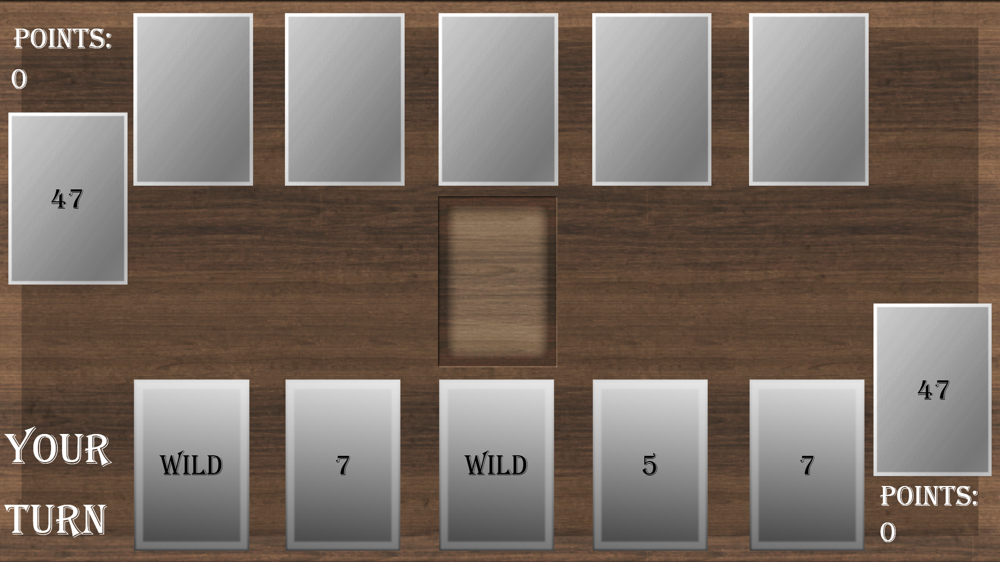
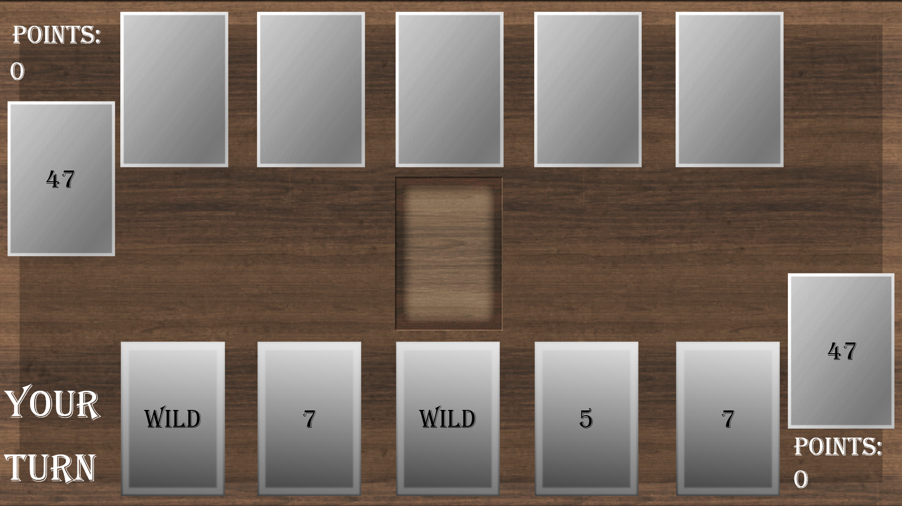

The Mediocre Card Game is a simple WPF-based strategy card game that pits the player against a CPU opponent. The player and CPU take turns playing cards to gain points against each other, while also trying to block their opponent's plays. The game features customizable game rules that allow you to play the game in many different ways. The game can be downloaded completely for free here.
 

Update 1.7 changelog:
* 1.7.5: Made the Gold card set unlockable. See the Cards page for info on how to unlock it
* 1.7.5: Added a "game select" screen that allows the choice of playing either a classic or custom game
* 1.7.4: Fixed a problem with the save data storage system
* 1.7.4: Added a unique texture for cards played by the CPU
* 1.7.4: New card sets were added. Player now has two card sets unlocked by default
* 1.7.3: Fixed a visual bug that caused the texture of the played card to revert to default when the CPU has no cards
* 1.7.2.2: The fullscreen setting change is now properly saved when using the F11 keybind to toggle fullscreen
* 1.7.2: The default card set is now properly saved to the unlocked cards database
* 1.7.2: Changes made to game settings and card customization are now saved and automatically loaded on startup
* 1.7.2: Card textures are now packed inside of the application
* 1.7.1: The options menu now includes a card customization menu